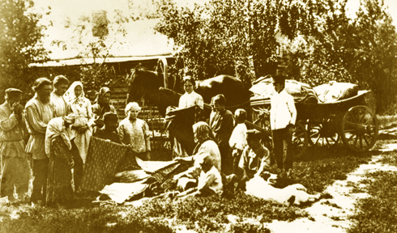

Chapter 4
All Sorts of Suits and Disputes

Selling cotton cloth in a village in Moscow province, early twentieth century.
From the collection of Mikhail Zolotarev.
This chapter focuses closely on the content of rural litigation in civil matters. Clerks' handwritten accounts of cases from several townships provided the basis for my surveys of legal disputes. Rather than relying on the global statistics collected for the provincial administration, I read through series of cases, explained in litigants and judges' words. The chapter explores the content of civil cases. Disputes over resources--money, commodities, labor, land and other property–reveal the web of economic activities and social relations in the countryside and highlight the importance of law in the working lives of rural people.
The charts and tables presented here are based on data in my surveys concerning the amounts of suits at township courts; the origins of suits; the objects named in debt cases; the role of documents in civil litigation; the rate of success of plaintiffs in civil suits; and the number of witnesses in inheritance cases.
Documents
© 2004 Jane Burbank, New York University
with permission from Indiana University Press
{kind=link}
{kind=link}